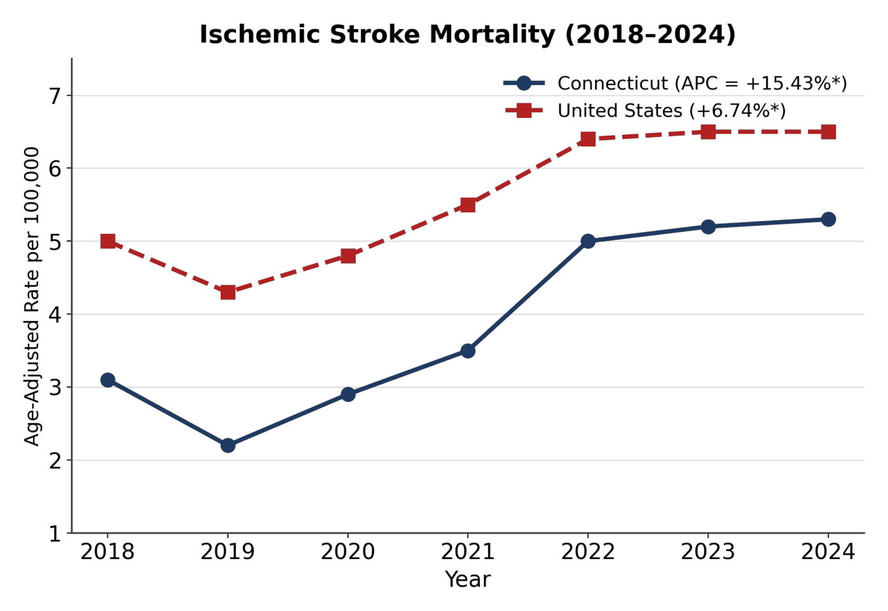
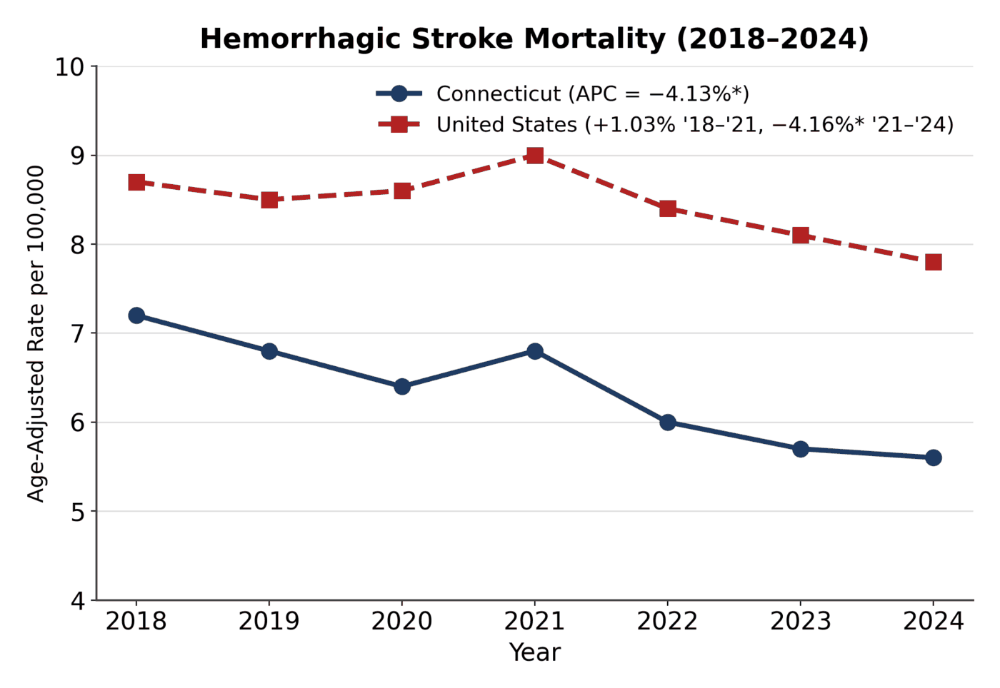
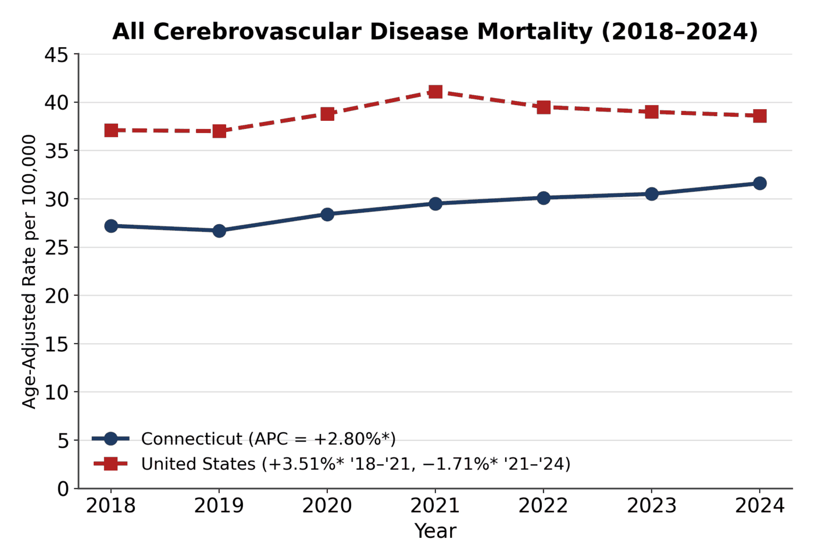

Work / Professional practice, Connecticut Department of Public Health
Stroke death rates in Connecticut and the United States, 2018–2024
Connecticut's overall stroke mortality looked like a slow climb. Splitting it by subtype showed ischemic stroke rising more than twice as fast as it was nationally.
Main finding
Connecticut's ischemic stroke death rate rose 15.4% per year, compared with 6.7% nationally. Hemorrhagic stroke fell about 4% per year in Connecticut (2018–2024) and in the U.S. (2021–2024).
Study summary
- Question
- Is stroke mortality in Connecticut following the national trend, and which stroke subtype accounts for any difference?
- Why it matters
- Ischemic and hemorrhagic strokes have different causes and prevention levers, so an all-stroke rate can hide which one is changing. State surveillance needs to know where to look.
- Data and population
- Deaths among Connecticut and U.S. residents, 2018–2024, from the CDC WONDER Underlying Cause of Death database. ICD-10 I60–I69 (all cerebrovascular), I63 (ischemic), I60–I62 (hemorrhagic).
- My role
- Independent project in my summer 2026 internship, with guidance from CTDPH epidemiologist Stephanie Poulin. I extracted the data, compared rates, ran the trend analysis, interpreted the results, and presented the poster.
- Methods
- Age-adjusted mortality rates per 100,000 (2000 U.S. standard population). Joinpoint regression (NCI Joinpoint Regression Program v6.0.1) to estimate annual percent change and test for changes in trend, α = 0.05.
- What it may mean
- The state's rise is concentrated in ischemic stroke. That points prevention and surveillance toward ischemic stroke risk factors and toward finding the towns and counties driving the trend. Trend data alone can't say why the rate rose.
- Limitations
- Subtype codes cover only part of all stroke deaths. U.S. comparison values come from Joinpoint output. 2020–2021 may reflect pandemic-era reporting disruption. Ischemic rates are small in absolute terms, so a large percent change reflects a modest number of deaths.
Explore the trend
Ischemic stroke ICD-10 I63
- Connecticut
- +15.4% a year2018 to 2024, significant
- United States
- +6.7% a year2018 to 2024, significant
Connecticut's rate stayed below the nation's every year, but it rose more than twice as fast. This is the finding the study is built on.
Deaths per 100,000 people, age-adjusted
Show the numbers
| Series | 2018 | 2019 | 2020 | 2021 | 2022 | 2023 | 2024 |
|---|---|---|---|---|---|---|---|
| Ischemic stroke, Connecticut | 3.1 | 2.2 | 2.9 | 3.5 | 5.0 | 5.2 | 5.3 |
| Ischemic stroke, United States | 5.0 | 4.3 | 4.8 | 5.5 | 6.4 | 6.5 | 6.5 |
| Hemorrhagic stroke, Connecticut | 7.2 | 6.8 | 6.4 | 6.8 | 6.0 | 5.7 | 5.6 |
| Hemorrhagic stroke, United States | 8.7 | 8.5 | 8.6 | 9.0 | 8.4 | 8.1 | 7.8 |
| All cerebrovascular disease, Connecticut | 27.2 | 26.7 | 28.4 | 29.5 | 30.1 | 30.5 | 31.6 |
| All cerebrovascular disease, United States | 37.1 | 37.0 | 38.8 | 41.1 | 39.5 | 39.0 | 38.6 |
Connecticut's age-adjusted ischemic stroke rate stayed below the national rate in every year. The concern is direction and speed: the state's rate rose faster than the nation's across 2018–2024, with the steepest change between 2021 and 2022.
By subtype
| Cause of death (ICD-10) | Connecticut | United States |
|---|---|---|
| All cerebrovascular disease (I60–I69) | +2.80%* (2018–2024, no joinpoint) | +3.51%* (2018–2021) −1.71%* (2021–2024) |
| Ischemic stroke (I63) | +15.43%* | +6.74%* |
| Hemorrhagic stroke (I60–I62) | −4.13%* | +1.03% (2018–2021) −4.16%* (2021–2024) |
* Statistically significant at α = 0.05. APC estimated with the Joinpoint Regression Program v6.0.1 (National Cancer Institute). Rates per 100,000, age-adjusted to the 2000 U.S. standard population. Source: CDC WONDER, Underlying Cause of Death.
Original poster figures



Reading the results
- Ischemic stroke is the driver. Hemorrhagic stroke can't explain Connecticut's rise; it fell in the state across the period.
- No turning point in Connecticut. The national all-stroke trend reversed after 2021. Connecticut's kept rising, with no significant change in slope.
- Descriptive, not causal. These are population trends. They show where to look next, not why the rates moved.
What I recommended
These are the three recommendations I presented to CTDPH staff and leadership on August 13, 2026.
- Strengthen primary prevention for ischemic stroke risk factors (hypertension, atrial fibrillation, diabetes, smoking) through targeted screening and management in high-burden communities.
- Evaluate access to acute ischemic stroke care across the state, including door-to-needle and door-to-thrombectomy times against AHA/ASA guideline benchmarks.
- Expand town- and county-level surveillance of ischemic stroke deaths to find the places driving the state trend.